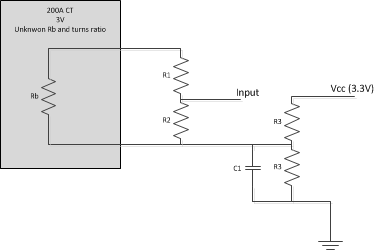

I have a question regarding CTs and EmonTX. I have 2 CTS from an original TED energy monitor and would like to use them in a multi-circuit energy monitor I am working on.
It appears they already have a burden resistor as the label states:
TED Model: QX 200-CT
Input: 200A
MAX 600V ~ 50/60Hz
Output: 0-3V
I will be using this with an Arduino Due, so the reference voltage is 3.3V. To use this, would it be as simple as using the basic CT circuit (http://openenergymonitor.org/emon/buildingblocks/ct-sensors-interface) with no extra burden resistor and the voltage divider with the 2 10k resistors to bring the input voltage peak at 1.5V?
Re: CT Question
I'm not familiar with that CT, but like you, I would interpret that as meaning it has an internal burden resistor and that it outputs 3V (rms) when it's clamped around a wire carrying 200A (rms). That means that while measuring a 200A circuit it will be swinging from +4.24V to -4.24V so those swings would be way too large for your 3.3V system.
You could confirm that's what they mean by connecting a multimeter to the output of the CT and clamping various test loads.
Is there any chance there's a small '.' in front of the 3V, i.e. that it's 0.3V. There are a bunch of CTs with internal burden resistors that are designed to output 333mV at maximum primary current. 3V seems a big swing for any microprocessor to deal with, but I don't know what's inside a TED.
There are also some "CTs" (using the term very loosely) that attempt to output a rectified DC voltage proportional to the primary AC current, so you might want to rule that out as well. Again, a multimeter should help you characterise it further.
Re: CT Question
I'll go along with dBC's answer - you need to find out what you actually get out of your CT before you can make any rational decision. You might find that one of Robin's test sketches is useful to look at the output waveform - but start with a low current (< 20 A) just in case the output is 3 V rms. If it is 3 V, then forget the voltage divider, just add a second burden resistor in parallel with the output to bring the voltage down (remember that CTs are current sources and are quite happy working into a short circuit - it's open circuits they don't like).
Re: CT Question
Won't he still need the voltage divider to centre the swing, i.e. to stop it swinging below 0V?
Re: CT Question
Thanks for the help. @dBC I thought the same thing about the voltage, but the labels are pretty clear and neither one has a '.' in front of the 3.
I did a few test readings on a 15A circuit that already has an SCT-013-000 (with a 140 Ohm burden) on it that has a fairly steady load on it. I got .208V for the SCT-013 and .045V for the TED CT. I also tested the two mains coming in and I think the voltages were around .8V on one and .4V on the other.
Before I design further tests to characterize this CT, I think I am going to contact TED and see if they have a data sheet on this CT. That would make it very clear.
Re: CT Question
"Won't he still need the voltage divider to centre the swing, i.e. to stop it swinging below 0V?"
The way Tom phrased his question with the numbers he gave, I read it that he intended to divide down the output voltage of the CT. I think you're thinking of the bias offset that provides a centre rail of 1.65 V dc.
Tom, there's something seriously wrong with your numbers. The SCT-013-000 gives you 50 mA per 100 A, i.e. 7.5 mA at 15 A. That into a 140 Ω burden should give you 1050 mV rms. If you have the other 200 A CT that should give you 3 V rms, then that too doesn't make sense, because you'll get 0.6 V at 200 A with your numbers.
Re: CT Question
Robert,
Sorry - I didn't mean to imply the circuit was maxed out at 15A, the load there was probably around 350W or so, giving a current of almost 3 amps which would yield a voltage across the burden resistor of around 200mV. How did you calculate the value for the 200A CT? Wouldn't it just be the ratio of input amps (15 in your calculations i assume) divided by the max current (200) multiplied by the rated voltage output? If so, then I compute 225mV @ 15A and 45mV with the 3 amps current I was measuring. That number does match what I read.
Re: CT Question
When you wrote a 15 A circuit with a constant load, that meant a constant 15 A to me. You must know the current before you can do anything meaningful.
Yes, taking the current as 15 A, and if for 200 A you expect 3 V, then I expect 225 mV as you say. But I read it as you got 45 mV at 15 A, so taken together with the YHDC numbers, my suspicion was your voltage readings were way out.
If your voltage reading, burden value and YHDC CT are all accurate, your current was 2.971 A, which is close to your estimate. (And from that I assume you're on a 120 V system.)
Re: CT Question
Thanks for all the help. These lead me to two more questions:
1. Without knowing the specs for the CT, is there a way to pick the best burden resistor size to add?
2. Would using a voltage divider work? It seems to be easier that trying to figure out the "best" burden resistor to add. I was thinking of this (and choosing values for R1 & R2 to give the appropriate maximum voltage)

2. Am I correct in calculating that I will need to bring the max voltage output of the CT to about 1.16V (3.3V / 2 / 1.414)?
3. what value should I start with for ICAL in the emonlib code?
Re: CT Question
The short answers:
1. No.
2.1. Yes.
2.2. No, a little below.
3. About 200, but adjust it on test.
The long answers.
1. You need to know the CT ratio. Normally, the ratio is defined in terms of the maximum primary current and the corresponding secondary current. In the case of a CT with a built-in burden, it will be the maximum primary current and the corresponding output voltage, always in rms values. DO NOT trust a CT where the ratio is specified as a number without units, because you cannot know where it starts to saturate. Then you need to check that the voltage you will develop is within the VA rating, which is the maximum power you can get through the CT, again before saturation becomes troublesome. It's very rare for the VA rating to be specified directly for these small CTs. Often, it is implied with a recommended burden value. Sometimes, there is absolutely no information whatsoever, and you have to test it.
2.1. Putting a second burden resistor in parallel would reduce the load on the CT and therefore improve the accuracy. It's a moot point whether you'd notice the difference in practice, except that it's one fewer resistor with it's inherent inaccuracy. It would not be hard to determine the internal burden value: the CT is a current source, so if you have a fixed constant primary current, measure the voltage with and without a parallel burden resistor. With it, the current shares between both. Without it, all the current flows entirely in the internal burden, but again you know the voltage hence you have two simultaneous equations and you can get to the internal burden resistor's value. Doing the maths, its: second burden × ((unloaded voltage/loaded voltage) - 1)
2.2. You should aim a few percent at least below the maximum. Any error in the centre voltage, burden value, CT inaccuracy, supply voltage etc can all have the effect of reducing the available swing by a few percent, but the biggest factor you need to worry about is the wave shape. If your current is a perfect sine wave, your √2 is OK, but if the wave is a bit 'peaky' (crest factor > √2), then the peak value will be higher, possibly quite a bit higher, than the rms value would lead you to believe. I usually recommend aiming for not more than 1.1 V rms, which gives you a bit less than 6% for the combined effect of all the factors, worst case. It's likely that your biggest loads will distort the waveform the least, therefore I'd expect at maximum current the waveform would be quite good, so 'peakiness' won't be a major factor.
3. From the CT and AC power adaptor installation and calibration theory page in Building Blocks, the value should be the ratio (primary current) / (the voltage at that current). In your case, the voltage is the final alternating voltage into the ADC, so it will be between about 1 and 1.1 V at 200 A, therefore between about 180 and 200, or if you stay with your 1.16 V, 172.41.
Re: CT Question
1. Given he's trying to reduce the voltage out of the CT, won't that mean he's heading away from any saturation issues? If you unclamp the CT so it's not trying to generate any voltage, and measure it's resistance, you'll have a rough idea of its internal resistance (burden and secondary windings). That would be a good starting point for your parallel burden resistor calculation. Provided you stay out of any saturation zones, then it should all be nice and linear, so with a known primary load you just need to plug in 2 different parallel burdens to get you 2 points on the line. From that, you should be able to choose a value that will give you your desired maximum voltage at maximum primary current.
2.1 One other disadvantage of the divider is that it increases the source impedance of your signal, which may interact with your AtoD converter. If you go low with R1+R2 to avoid that, then R1+R2 effectively become a parallel burden resistor and you're back having to solve the problem you were trying to avoid (#1)
Re: CT Question
"1. Given he's trying to reduce the voltage out of the CT, won't that mean he's heading away from any saturation issues?" No he isn't doing that - with an external voltage divider, the CT is generating exactly the same voltage and transferring exactly the same power into its burden (given a suitably high value divider chain). So the operating point of the CT is not changed.
Measuring the resistance of the parallel combination of secondary winding and burden isn't likely to help much, the secondary is probably about 10 × the burden, so you might get within 10%. And don't expect a standard value, the burden value may well be adjusted on test to calibrate the output.
2. If the Thévenin equivalent impedance of the divider is less than 10 kΩ (from memory - check the data sheet), it won't affect the conversion. But I agree - it's better avoided and just add a parallel burden.
As I wrote, it's not difficult to deduce the value of the burden resistor with a known resistor and two voltage readings. A possibly simpler and more direct variation of the same method: measure the secondary voltage and then add parallel resistors until the voltage halves. The parallel resistance that you added is the value of the internal burden (this follows from the equation I gave above).
Re: CT Question
"1. Given he's trying to reduce the voltage out of the CT..."
What I meant to say is "Given he's trying to reduce the voltage swing into his ADC input"
As I wrote, it's not difficult to deduce the value of the burden resistor
Exactly. Somehow I completely missed that part of your answer, and found your short answer 1 pretty pessimistic. I took your short answers to mean you were favoring the voltage divider over the parallel burden resistor.
But I agree - it's better avoided and just add a parallel burden.
Good. I think we're all in violent agreement then.
Re: CT Question
Again, thanks for all the info! Didn't mean to start a fight...
I will be testing my CT as soon as I get the chance to determine the internal burden resistor vale and to really verify it is 3V. After refreshing myself on series and parallel circuits (last time I used this stuff was more years ago than I care to admit), I was going to do exactly what was suggested to determine the burden resistor value. As far as my target voltage - I was going to make sure it was well under the theoretical value I stated (thanks for the suggested values).
I will ditch the voltage divider and opt for the second burden resistor as that seems to be the best option.
Re: CT Question
Tom: Don't worry, I don't think you started a fight. Because current sources are a lot less common than voltage sources, a lot of people (I'm not saying you!) find it hard to flip their thinking around when working with CTs, that's why I spelled out in some detail (not totally complete because I didn't have the time to do diagrams etc and write out all the equations) the way to find the internal burden value. Of course when you have that, the CT current ratio is easy to determine, provided you know the primary current - which you don't need just to determine the burden value as long as you know it's constant. But that won't tell you where you lose linearity as it starts to saturate. I know that's not relevant to you as you know that, but someone reading this later might not be in that position.
dBC: "and found your short answer 1 pretty pessimistic." Too right it is, but that's the way some of the cheap Fleabay advertisers, and some not-quite-so-cheap advertisers, work. If you buy a CT or anything on the basis of an incomplete spec, it's nobody else's fault if it isn't up to the job. It's much better to know there might be a problem so that you can go to a diligent seller instead. Forewarned is forearmed, or something like that.
Re: CT Question
Robert: I meant that tongue-in-cheek about the argument. I hate when that doesn't come across in text.